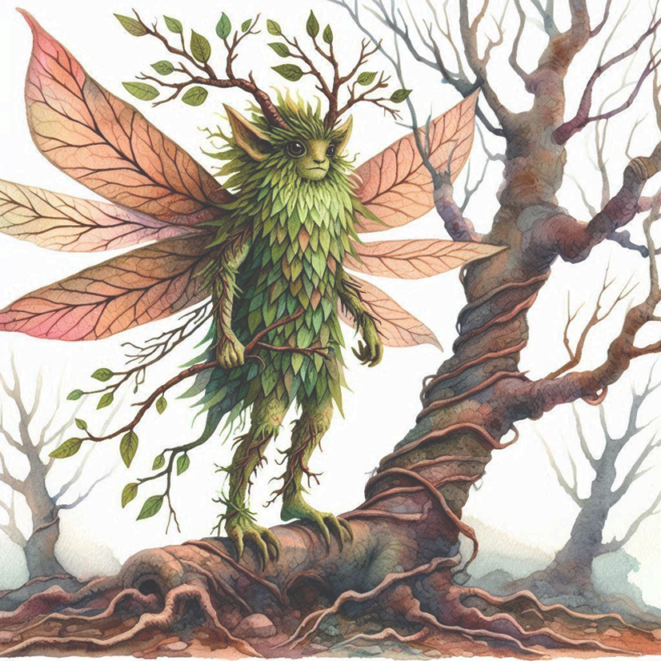

Welcome to the Azios Wiki


Welcome to Azios!
"The World of the Morning Star"
This is a wiki for a personal worldbuilding project.
"The World of the Morning Star"
This is a wiki for a personal worldbuilding project.
CC BY-NC-SA

Okepfs
Location
The Okepfs reside in the Gangling Grove, a towering forest in the lowlands between the mountains in southwestern Azios. There is no Magic native to the Gangling Grove.Life Cycle
-Small seeds float onto nearby trees and attach to leaves
-Seeds hatch and a small larval form similar to a caterpillar begins to eat leaves
-Some trees have defense mechanisms that kill the larval Okepfs
-Chlorophyll is incorporated into their own bodies
-Once they have enough chlorophyll they will metamorphize
-They hang upside down, shed their skin, and form a chrysalis
-Mature Okepfs will grow flowers when they have enough nutrients and energy
-Individual Okepfs can grow male flowers, female flowers, both, or neither
-Pollination occurs via wind, it is entirely passive and Okepfs do nothing to facilitate it
-Small seeds float to nearby trees and attach to leaves
-Seeds hatch and a small larval form similar to a caterpillar begins to eat leaves
-Some trees have defense mechanisms that kill the larval Okepfs
-Chlorophyll is incorporated into their own bodies
-Once they have enough chlorophyll they will metamorphize
-They hang upside down, shed their skin, and form a chrysalis
-Mature Okepfs will grow flowers when they have enough nutrients and energy
-Individual Okepfs can grow male flowers, female flowers, both, or neither
-Pollination occurs via wind, it is entirely passive and Okepfs do nothing to facilitate it
-Small seeds float to nearby trees and attach to leaves

A mature Okepf
Culture
Mature Okepfs can fly. They spend most of their time in their tree, only leaving to gather materials for their homes, or to hunt for food that has nutrients they cannot get from photosynthesis. Okepfs live in the same tree they were hatched on, the tree rarely survives. Okepfs do not have a social construct of gender or sexuality, their reproduction is only passively facilitated and while there is sex differentiation in the flowers they produce it is not seen as a difference that holds any cultural meaning. Their tree mates are their familial unit and who they have most allegiance to. Okepfs will rarely intervene in the buisness of other Okepf families or on behalf of larval Okepfs. They are largely peaceful with occassional conflicts with other Okepfs over hunting territory.Original File: Okepfs.md